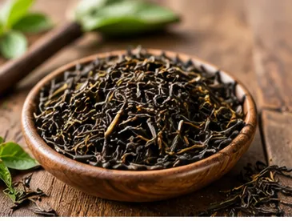
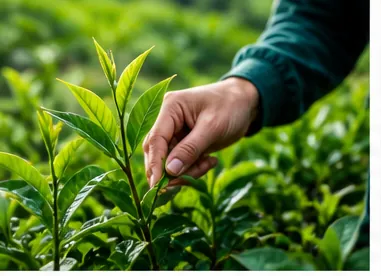
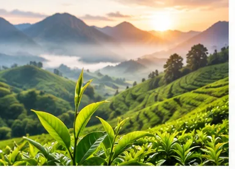

چای از کجا میآید؟
چای از برگهای گیاهی به نام کاملیا سیننسیس (Camellia sinensis) به دست میآید. برخلاف تصور بعضی افراد، انواع اصلی چای سیاه، سبز و سفید از همین گیاه تهیه میشوند و تفاوت آنها بیشتر به روش برداشت و فرآوری برگها مربوط است.
خاستگاه تاریخی چای را معمولاً شرق و جنوب آسیا میدانند. این گیاه به مرور در کشورهای مختلف گسترش پیدا کرد و امروزه در نقاط مختلف جهان، بهویژه مناطق دارای آبوهوای گرم و مرطوب، کشت میشود.

چای گیلان چیست؟
چای گیلان، چایی است که در مزارع چای استان گیلان تولید میشود. گیلان به دلیل آبوهوای مرطوب و بارندگی مناسب، یکی از مناطق مهم چایکاری ایران است.
لاهیجان یکی از شناختهشدهترین مناطق چایکاری گیلان است و سابقه مهمی در صنعت چای ایران دارد. امروزه علاوه بر لاهیجان، در بخشهایی از شهرستانهای دیگر گیلان نیز چای کشت میشود.
چای گیلان از مرحله پرورش بوته در مزرعه تا برداشت و فرآوری، مسیر مشخصی را طی میکند تا برگ تازه به چای خشک تبدیل شود.

مراحل کاشت و برداشت چای
تولید چای از آمادهسازی زمین و کاشت یا پرورش بوتههای چای آغاز میشود. بوته چای برای رشد مناسب به آب، رطوبت، نور و شرایط مناسب خاک نیاز دارد.
پس از رشد بوته، برگها و جوانههای مناسب برای برداشت انتخاب میشوند. در مزارع چای، معمولاً قسمتهای جوان و تازه بوته اهمیت بیشتری دارند، زیرا کیفیت مواد اولیه بر ویژگیهای چای نهایی تأثیر میگذارد.
برگهای برداشتشده باید در مدت مناسبی به کارخانه منتقل شوند تا فرآیند فرآوری آنها آغاز شود. زمان برداشت و شرایط برگ در هنگام چیدن میتواند بر کیفیت چای نهایی تأثیرگذار باشد.

نحوه فرآوری برگ چای
برگ تازه چای پس از برداشت وارد کارخانه میشود و طی چند مرحله به چای خشک تبدیل میشود. در تولید چای سیاه، یکی از مراحل مهم پلاس کردن است. در این مرحله مقداری از رطوبت برگ کاهش پیدا میکند و برگ برای مراحل بعدی آماده میشود.
پس از آن، برگها بهوسیله دستگاهها خرد و پیچیده میشوند. این کار باعث میشود ترکیبات موجود در سلولهای برگ با اکسیژن تماس بیشتری پیدا کنند. مرحله بعد اکسیداسیون است که نقش مهمی در شکلگیری رنگ، عطر و طعم چای سیاه دارد.
در پایان، برگها خشک میشوند تا رطوبت آنها کاهش پیدا کند و چای برای نگهداری و بستهبندی آماده شود. پس از جداسازی و درجهبندی، چای خشک میتواند به بازار عرضه شود.
چرا چای گیلان طعم و عطر خاصی دارد؟
طعم و عطر چای نتیجه مجموعهای از عوامل است و نمیتوان آن را فقط به یک عامل نسبت داد. شرایط آبوهوایی، خاک، ارتفاع مزرعه، زمان برداشت، نوع برگ و روش فرآوری همگی میتوانند بر ویژگیهای چای تأثیر بگذارند.
آبوهوای مرطوب گیلان و شرایط طبیعی مناطق چایخیز این استان، محیط مناسبی برای رشد بوته چای فراهم میکند. از طرف دیگر، نحوه برداشت و فرآوری برگها نیز در ایجاد عطر، رنگ و طعم چای نقش دارد.
به همین دلیل، چای تولیدشده در مناطق مختلف ممکن است از نظر عطر و مزه با یکدیگر تفاوت داشته باشد.
🌿نکته جالب
چای گیلان یکی از محبوب ترین و باکیفیت ترین چای های ایرانی است که به دلیل طعم عالی و خواص فراوان و روش تولید سنتی .همواره مورد توجه مردم قرار دارد . مصرف منظم چای می تواند به بهبود سلامت و افزایش انرژی بدن کمک کند